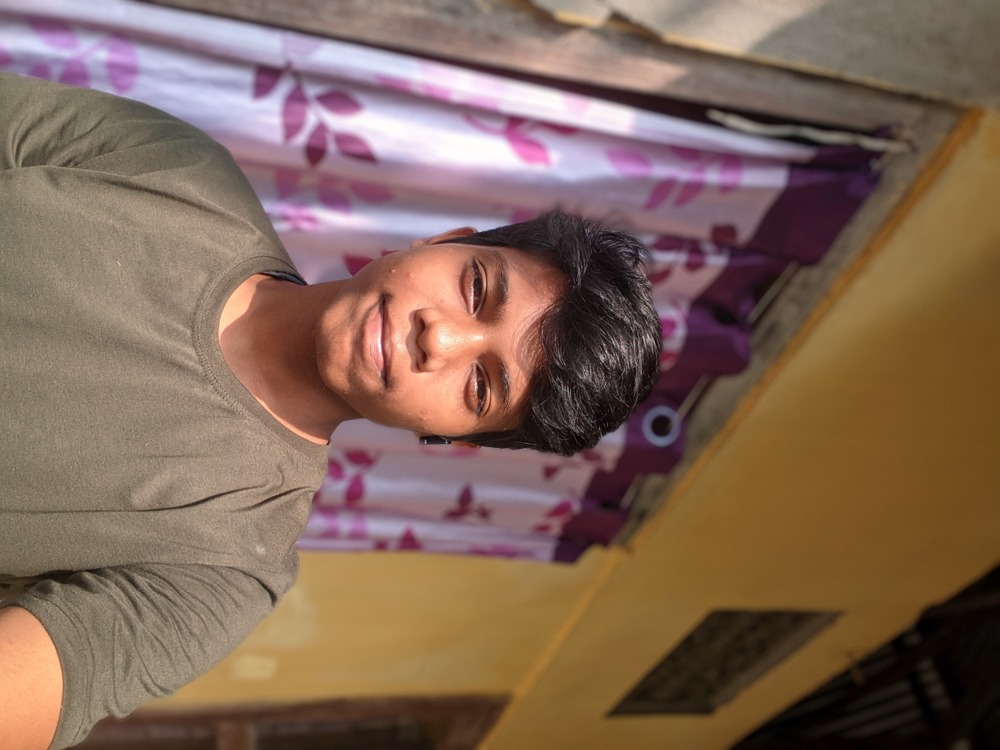

TUKU
TUKU

Tuku on 17th January, 2025
Born
Occupation(s)
Years active
Family
Website
Occupation(s)
Years active
Family
Website
Tuku
17 January 2009 (age 16)
Kaziranga, Assam, India
Programmer, Coder
2023-present
Kiran Bhuyan (father)
Rita Bhuyan (mother)
Sourov Bhuyan (brother)
GitHub Profile
17 January 2009 (age 16)
Kaziranga, Assam, India
Programmer, Coder
2023-present
Kiran Bhuyan (father)
Rita Bhuyan (mother)
Sourov Bhuyan (brother)
GitHub Profile
Early Life & Background
Tuku was born on 17 January 2009 in Kaziranga, Assam, India. His parents are Kiran Bhuyan and Rita Bhuyan. He has a brother named Sourov Bhuyan.
Education
Tuku is currently studying at Kaziranga High School in Class 10. He has a keen interest in programming and web development.
Personal Life
Tuku enjoys coding and creating programs. He is happy with his life but does not have many friends, which sometimes makes him feel bored or sad.
Creative Works
Tuku is passionate about web development and programming. He is working on various coding projects and plans to start sharing his knowledge through his YouTube channel.
References
(No references available yet)